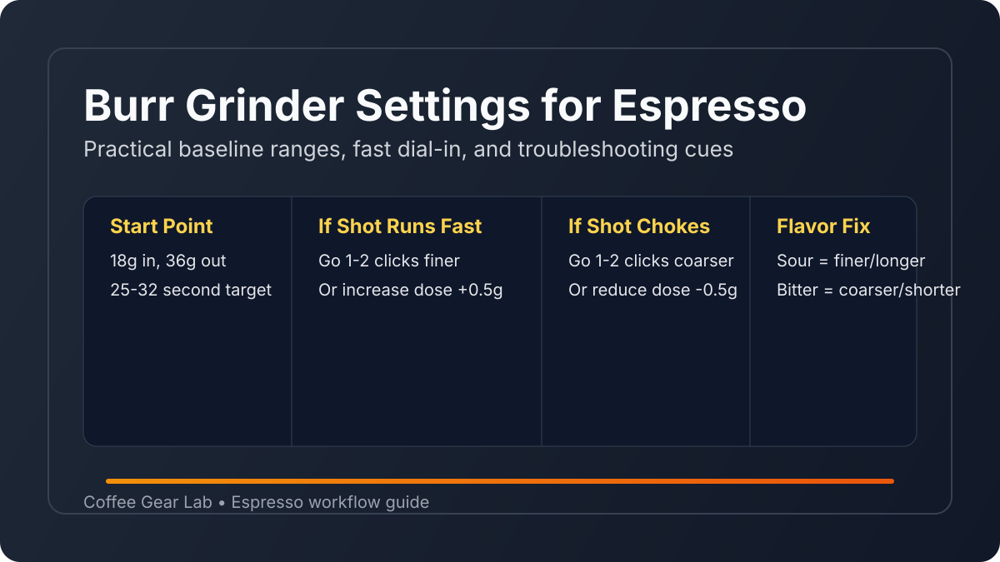

Burr Grinder Settings for Espresso: How to Dial In Faster
If your shots swing between sour and bitter, your grinder settings are usually the first fix. This guide gives practical starting ranges and a repeatable dial-in workflow that works on popular sub-$200 burr grinders and entry espresso machines.

Quick answer: Start near your grinder’s espresso zone, pull an 18g in / 36g out shot, and target 25-32 seconds. If the shot runs fast and tastes sour, go 1-2 clicks finer. If it chokes or tastes harsh, go 1-2 clicks coarser and retest.
Baseline settings that work on budget burr grinders
Use these as first-shot starting points, not absolute truth. Burr alignment, bean age, humidity, and basket type all shift your final number.
| Grinder | Suggested espresso start point | Adjustment style | Notes |
|---|---|---|---|
| Baratza Encore ESP | Espresso zone, lower-middle clicks | Stepped | Very repeatable for beginners; adjust 1 click at a time. |
| Fellow Opus | Fine range + micro-adjust ring as needed | Stepped + inner micro | Use small micro moves before large outer-ring jumps. |
| Turin SK40 | Fine espresso zone, then tiny collar nudges | Stepless-style | Best with single-dosing and bellows for low retention. |
| KINGrinder K6 (manual) | Fine click range for espresso | Click-based manual | Strong clarity; adjust in small click increments. |
4-step dial-in workflow (keep this constant)
- Set a fixed recipe: Start at 18g dose, 36g yield (1:2 ratio), 25-32 second shot time.
- Pull one test shot: Record shot time and taste before changing anything.
- Adjust one variable only: Grind size first. Avoid changing dose, yield, and grind together.
- Lock your setting: Once flavor and time are right, note the setting and bean date for repeatability.
Need a tighter decision loop? Follow the full espresso shot dial-in workflow with taste-map adjustments and one-change-per-shot checkpoints.
How roast level changes grinder settings
- Light roasts: Usually need finer settings and slightly longer contact time to avoid sharp acidity.
- Medium roasts: Most forgiving. Start at baseline and tune in small steps.
- Dark roasts: Often need a touch coarser to prevent over-extraction and bitter finish.
If your machine still behaves inconsistently, cross-check workflow in our best espresso machine under $200 guide and verify dose accuracy with our coffee scale recommendations.
Fast troubleshooting for bad shots
Sour + fast shot
Go finer by 1-2 clicks (or a tiny stepless nudge), keep dose constant, and retest. Sour + fast usually means under-extraction.
Bitter + slow shot
Go slightly coarser and shorten contact time. Bitter + slow usually signals over-extraction or too-fine grind.
Channeling or spray from naked portafilter
Improve puck prep before making large grind changes: distribute evenly, tamp level, and reduce clumping/static at the grinder exit.
Shot chokes the machine
Move coarser 1-2 clicks or drop dose by 0.5g. Choking usually indicates too much resistance in puck prep or grind size.
Retention, static, and maintenance matter more than most people think
Retention and static can make your "same setting" behave differently shot to shot. For stable results, purge 0.2-0.5g after major setting moves, brush the chute every few days, and deep-clean burrs every 4-6 weeks. For grinder buying decisions, compare these trade-offs in our best burr coffee grinder under $200 roundup, follow this burr grinder cleaning routine, and compare manual options in our best manual coffee grinder under $100 guide.
FAQ
What shot time should I target for espresso?
For most home setups, a 1:2 ratio (for example 18g in, 36g out) in 25-32 seconds is a reliable starting target.
Should I adjust grind size or dose first?
Adjust grind size first. Keep dose and yield fixed so you can isolate cause and effect and dial in faster.
How often should I change grinder settings?
Expect small changes whenever beans age, humidity shifts, or you open a new bag. A one-click correction every few days is normal.
Why does my espresso taste sour even at fine settings?
You may still be under-extracting because of low brew temperature, uneven puck prep, or too-short contact time. Tighten puck prep and extend shot time slightly.
Can one grinder setting work for both espresso and pour over?
Not usually. Espresso requires much finer grind and tighter tolerances. Keep separate noted settings for espresso and filter recipes.
Related guides
- Best Burr Grinder for Espresso (2026)
- Best Burr Coffee Grinder Under $200
- Best Espresso Machine Under $200
- Espresso Shot Dial-In Workflow (Fix Sour or Bitter Shots Fast)
- Best Coffee Scale for Espresso & Pour Over
- Coffee Brewing Ratio Guide
- Best Coffee Grinder for Pour Over